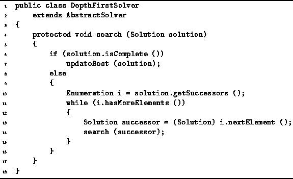

Data Structures and Algorithms
with Object-Oriented Design Patterns in Java
Data Structures and Algorithms
with Object-Oriented Design Patterns in Java
This section presents a backtracking solver
that finds the best solution to a given problem by
performing depth-first traversal of the solution space.
Program  defines the DepthFirstSolver class.
The DepthFirstSolver class extends the AbstractSolver class
defined in Program .
It provides an implementation for the search method.
defines the DepthFirstSolver class.
The DepthFirstSolver class extends the AbstractSolver class
defined in Program .
It provides an implementation for the search method.

Program: DepthFirstSolver class.
The search method does a complete,
depth-first traversal of the solution space. Note that the implementation does not depend upon
the characteristics of the problem being solved.
In this sense the solver is a generic, abstract solver
and can be used to solve any problem that has a tree-structured solution space!
Note that the implementation does not depend upon
the characteristics of the problem being solved.
In this sense the solver is a generic, abstract solver
and can be used to solve any problem that has a tree-structured solution space!
Since the search method in Program
visits all the nodes in the solution space,
it is essentially a brute-force algorithm.
And because the recursive method backs up
and then tries different alternatives,
it is called a backtracking algorithm.
 Copyright © 1998 by Bruno R. Preiss, P.Eng. All rights reserved.
Copyright © 1998 by Bruno R. Preiss, P.Eng. All rights reserved.